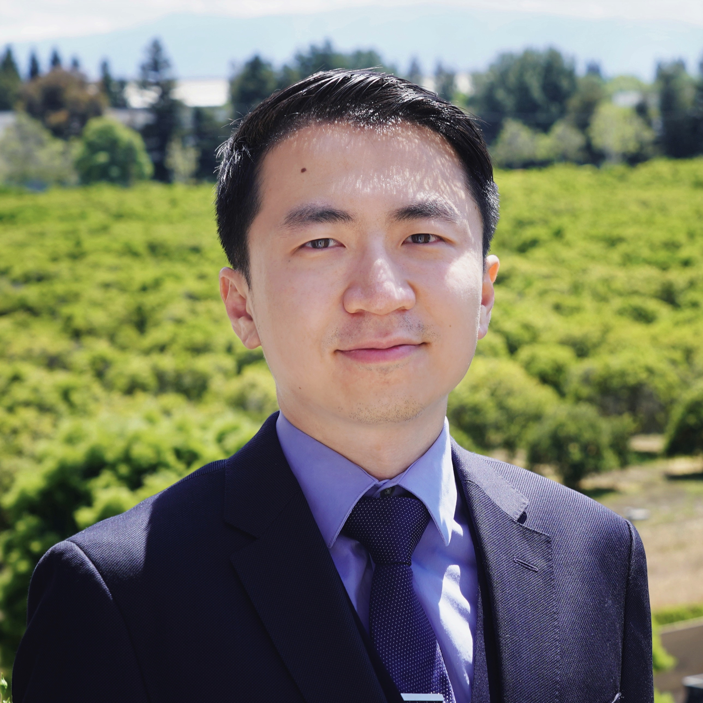
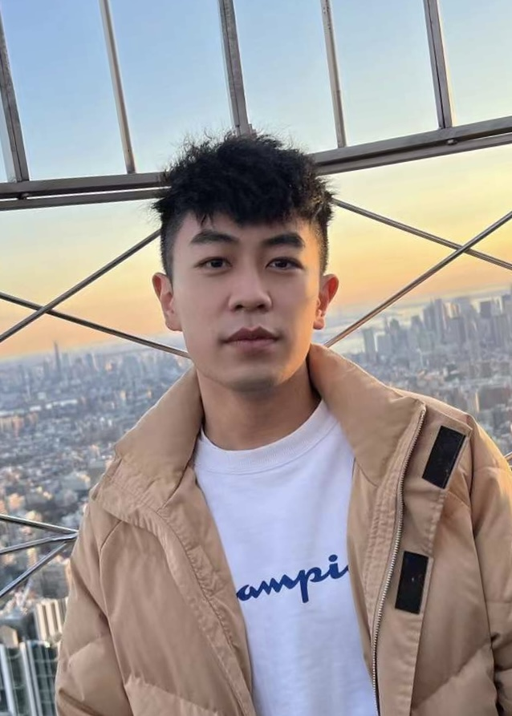
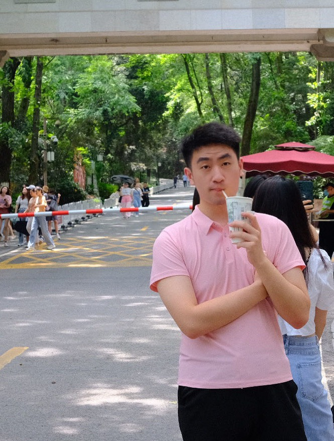

Principal Investigator

Ziran Wang
Assistant Professor
Lyles School of Civil Engineering
Purdue University
Email: ziran [at] purdue [dot] edu
Doctoral Students
 Can Cui
Education Background
M.S. in Electrical and Computer Engineering
University of Michigan, Ann Arbor
Internship
Cummins, 2024 Summer
Toyota, 2025 Spring
Research Interests
LLMs in Automated Driving, Digital Twin, ADAS, Machine learning, Controls
Email: cancui [at] purdue [dot] edu
 Juanwu (David) Lu
Juanwu (David) Lu
Education Background
M.S. in Civil Engineering
University of California, Berkeley
Internship
Zoox, 2024 Summer
Waymo Research, 2025 Summer
Research Interests
Microscopic Traffic Simulation, Driver Behavior, Autonomous Vehicles
Email: juanwu [at] purdue [dot] edu
 Yunsheng Ma
Yunsheng Ma
Education Background
M.S. in Computer Science
New York University
Research Interests
Autonomous Driving, Multimodal LLMs
Internship
Toyota, 2024 Summer
Bosch AI, 2024 Fall & 2025 Spring
Waymo Research, 2025 Summer
Email: yunsheng [at] purdue [dot] edu
SungYeon Park
Education Background
M.S. in Civil Engineering
Seoul National University
Research Interests
Autonomous Driving, Multimodal LLM, Perception
Email: sungyeon [at] purdue [dot] edu
Juntong Peng
Education Background
B.S. in Information Engineering
Shanghai Jiaotong
University
Research Interests
Computer Vision, Connected Autonomous Vehicles, Motion Prediction
Email: juntong [at] purdue [dot] edu
Zichong Yang
Education Background
M.S. in Mechanical Engineering
Carnegie Mellon University
Research Interests
Computer Vision, Human Pose Estimation, Human Trajectory Prediction
Email: zichong [at] purdue [dot] edu
Master students
Luyang Jiang
Education Background
B.Eng. In Computer Engineering
University of British
Columbia
Internship
Wonder, 2024 Summer
Research Interests
Autonomous Driving, Computer Vision, Machine Learning
Email: jian1078 [at] purdue [dot] edu

Zihao Li
Education Background
B.Eng. in Transportation Engineering
Tongji University
Internship
NREL, 2023 Fall, 2024 Spring, 2024 Summer
Research Interests
Digital Twin, Driver Behavior
Email: zihao [at] purdue [dot] edu
Yupeng Zhou
Education Background
B.S. in Mechanical Engineering
South China University of
Technology
Research Interests
Robotics, Controls, Autonomous Vehicles
Email: zhou1346 [at] purdue [dot] edu
Undergraduate students
Manav Gagvani
Current Enrollment
Computer Engineering
Purdue University
Research Interests
Learned Autonomy, Robotic Foundation Models, Embedded ML
Email: mgagvani [at] purdue [dot] edu
Rajeev Sashti
Current Enrollment
Computer Engineering
Purdue University
Research Interests
Autonomous Vehicles, Computer Vision, Robotics, Embedded Systems
Email: rsashti [at] purdue [dot] edu
Interns
Chloe Chen
Current Enrollment
Prospect High School
Saratoga, California
Alumni
Shubham Khawale
First Employment
Dayton-Phoenix Group
Purdue Degree
M.S. in Mechanical Engineering, 2023
Email: skhawal [at] alumni [dot] purdue [dot] edu
Rohit Naidu
First Employment
Texas Instruments
Purdue Degree
B.S. in Computer Engineering, 2023